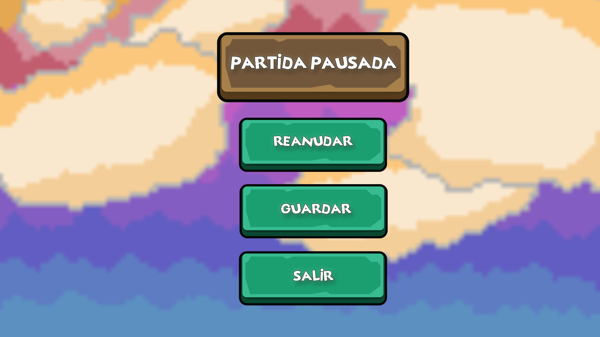

Town of memorias es un videojuego en 3D que tendrá una cámara fija que seguirá al jugador por todo el mapa con una perspectiva picada. Controlaremos a Adara, una chica de ciudad que al recibir como regalo de su abuela una vieja casa situada en Polímpo en la ella antes vivía, decide mudarse. Allí tendrá que aprender a cuidar la granja para obtener recursos y avanzar con el juego. Una particularidad de los simuladores de granjas es que son juegos sin un final determinado, el jugador puede jugar la partida todos los años de juego que desee.
En cuanto a los periféricos que pueden usarse a la hora de jugar está totalmente adaptado, pueden ser tanto mando en las dos plataformas, como con ratón y teclado si es jugado en ordenador. Esto hace posible que el jugador pueda elegir una opción u otra según desee.
Los controles los distinguimos entre los de el mando de Nintendo Switch y los de teclado de ordenador que serán las dos plataformas donde se podrá encontrar este juego.

Para el mando de Nintendo Switch, como vemos en la imagen, caminaremos con el joystick izquierdo, mientras que con el joystick derecho podemos desplazarnos por el menú, al cual podremos acceder pulsando el botón “+”. Con “R” o “L” cambiaremos de herramienta, y con “ZR” o “ZL” nos moveremos por la barra de objetos. Por último, en la parte derecha de la consola tenemos diferentes botones: “A” nos permite interactuar, “B”, cancela acciones o entra en el menú, “Y” nos permite usar objetos, y “X” para fabricar diferentes objetos.

En el caso de jugar con el teclado de ordenador podemos movernos mediante las teclas “W”, “A”, ”S”, “D”. Usaremos las herramientas o colocaremos un objeto con el click izquierdo o “C”, también podremos realizar una acción mediante el click derecho o “X”. Para abrir el menú también tendremos dos opciones ya que podremos entrar pulsando “Esc” o “E”. La versión de ordenador nos incluye un atajo que no encontramos con el botón de switch y es que pulsando la “M” podremos acceder al mapa. Por último, la barra de objetos también puede ser desplazada con “Tab”. Otro elemento que tiene similar a muchos son los atajos de teclado, que nos ayudan a elegir el objeto que queremos usar con mayor rapidez, para usarlo debemos pulsar los números del teclado alfanumérico.
Este tipo de videojuegos tiene una característica muy común y es que hay dos formas de guardado. Una de esas formas es mediante un autoguardado programado cada vez que pasa un día del juego. En Town of memories además del autoguardado cada vez que el jugador lo desee podrá guardar desde el menú de pausa, permitiendo al jugador que pueda guardar su partida cuando desee desde el momento que lo dejo.
Town of Memories está pensado para ser jugado tanto individualmente como en un modo multijugador cooperativo. En un inicio el juego solo podrá ser accesible para un jugador, pero con la intencionalidad de añadir en una futura versión el modo multijugador, compatible en todo momento con este género.
Como ya hemos comentado el modo multijugador será cooperativo y cada jugador disfrutará de la partida desde su propia pantalla, dándoles mayor libertad a sus acciones. Otro elemento que se desea añadir al videojuego es el crossplay para que los jugadores puedan continuar sus partidas desde las diferentes plataformas en las que el videojuego está disponible, es decir, Nintendo Switch y Microsoft Windows.
El juego transcurrirá durante 4 estaciones: primavera, verano, otoño e invierno. Como podremos observar son las mismas estaciones que conocemos, buscando que el jugador se encuentre más familiarizado con las temporadas. En cada estación el jugador se tendrá que adaptar a los diferentes cultivos según la temporada y clima, ya que cada temporada tendrá unos cultivos específicos que solo crecerán en ella.
La historia empieza en primavera, esto es habitual en numerosos juegos incluso fuera de este género debido a que es una de las estaciones que más facilitan al jugador el progreso. Cada temporada tendrá un total de 30 días, donde podremos ver los efectos de cada temporada. En primavera y otoño habrá numerosos días de lluvia, en verano días soleados y en invierno estará nevando todos los días, haciendo que la experiencia sea un poco más real para el jugador.
Como ya he dicho cada temporada tendrá diferentes cultivos, para la elección de estos he realizado un pequeño estudio de qué frutas crecen en las diferentes temporadas del juego e intentando que no coincidiera con las frutas que se encuentran normalmente en este tipo de juegos. Los cultivos elegidos son:
Primavera: La primera estación jugable, podremos ir a la tienda donde se venden semillas de arándanos, kiwis y pomelos. Estas serán las menos costosas ya que serán compradas al inicio del juego.
Verano: En esta estación recordemos que no habrá lluvias y las semillas que podremos comprar serán de sandía, fresas y melones.
Otoño: Será habitual que caiga más de un chubasco en esta estación, por lo que en la tienda encontraremos semillas de uvas, granada y chirimoya.
Invierno: Esta temporada es totalmente diferente ya que no podremos plantar ningún cultivo debido a las altas temperaturas y la nieve, pero se desbloquea la posibilidad de comprar las semillas de dos tipos de árboles, cocos y plátanos. Estas frutas son anuales, por lo que una vez crezcan los árboles dan frutos durante todo el año.
Durante el videojuego podremos ir subiendo las distintas habilidades que poseemos, consiguiendo así las recetas que necesitaremos para progresar en el juego. Las habilidades que podremos subir de nivel son:
Cocina: La habilidad de cocina se irá incrementando cada vez que el jugador realice distintas recetas. Cuando su nivel suba se desbloquearan nuevas recetas más avanzadas que podrán ayudar al jugar con bonificaciones.
Pesca: Esta habilidad que sube a medida que el jugador vaya pescando, esta acción puede realizarse tanto en los ríos como los lagos. A medida que pescamos nos resultará más fácil realizar esta acción y conseguir mejores peces que podremos utilizar para nuestras recetas, además de objetos aleatorios que puedes pescar en algunas ocasiones.
Cultivo: Uno de los métodos más eficientes para conseguir dinero es cultivando nuestras propias semillas. Comenzaremos nuestra aventura con 20 semillas que nos dará la alcaldesa como un objeto inicial y a partir de ese momento comenzaremos a subir nuestra habilidad con los diferentes cultivos de cada temporada y consiguiendo algunas mejoras con las subidas de nivel como por ejemplo que los cultivos crezcan más rápido.
Recolección: La habilidad de recolección se consigue cada vez que el jugador recoge los cultivos o incluso talando los árboles que pueda encontrar, esto a largo plazo con la subida de niveles también le ayudará porque podría conseguir más frutos de una misma plantación, o más madera de los árboles.
El verdadero progreso del juego va marcado por el jugador y el tiempo. Estos dos factores hay que tenerlos en cuenta juntos, ya que tendremos que pensar cómo gestionar nuestro días, pudiendo elegir entre las distintas actividades que están disponibles durante la partida, como es cultivar los productos de la temporada, pescar en los distintos puntos del mapa, recolectar materiales silvestres que van creciendo o cocinar nuevas recetas para potenciar a tu personaje y así mejorar temporalmente sus capacidades. Según el tiempo que invertimos en las distintas actividades, nuestras habilidades irán mejorando progresivamente, por lo que también tenemos la posibilidad de centrarnos en sólo una para ser los mejores en esa actividad rápidamente, ¡Tú decides el camino que quieres recorrer!
Durante el paso del tiempo el juego pasará por 4 estaciones en las que el clima será totalmente diferente. Esto le aplica una pequeña dificultad al jugador, ya que tendrá que adaptarse a cada temporada:
Primavera: En primavera habrá un buen clima, y abundantes días de lluvia que nos ayudarán a regar y tener más tiempo libre para poder hacer lo que deseamos sin tener que dedicarle tanto tiempo a nuestros cultivos.
Verano: Los días calurosos donde no veremos ni un solo día de lluvia, aun así esto no impedirá que podamos seguir cuidando nuestros cultivos o ir a la playa con los habitantes del pueblo a disfrutar de un día soleado.
Otoño: Llegamos a otra de las estaciones donde los días de lluvia serán abundantes y nos permitirá que nuestros cultivos no necesiten tantos cuidados.
Invierno: Esta estación no nos permitirá tener ningún tipo de cultivo por las bajas temperaturas y la nieve del suelo, por lo que el jugador deberá realizar otras acciones como la recolección, la pesca o la cocina. También es el momento ideal para aumentar la amistad con nuestros vecinos.
Los logros son un elemento que todos los juegos tienen para así premiar al jugador por sus acciones y horas de juego. En Town of Memories hemos creado algunos logros que consideramos necesarios a la hora de crear un juego de este género, alguno de ellos son:
“Mi primera cosecha”: Una vez el jugador consigue recolectar su primer cultivo se activará este logro.
“Nueva amistad”: Este logro lo conseguiremos cuando consigamos la primera vez que le hagamos un regalo que le guste a un aldeano. Solo se activará si el regalo que le damos es de su agrado y solo la primera vez que demos un regalo.
“¡Pescando el pescado!”: Nuestra primera primera pesca exitosa hará que consigamos este logro, además de darnos la posibilidad de obtener comida para así poder cocinar.
“Nuevo chef en el pueblo”: Este logro será conseguido por el jugador tras subir el nivel de su habilidad de cocina.
“El Coleccionista”: Llegamos a un gran desafío para los jugadores más coleccionistas, pues solo se podrá conseguir tras haber tenido en tu inventario todos los objetos disponibles en el juego.
“El rey de los crafteos”: Junto al logro anterior, este es otro logro ideal para los jugadores más completistas, pues para conseguirlo se deberá fabricar todos los objetos del juego, convirtiéndolo en uno de los logros más complicados de conseguir.
Para que la partida no termine siendo tan rutinaria, hemos creado algunos eventos para que el jugador tenga algunos días distintos, en los que estará solamente con los vecinos del pueblo disfrutando del día y las diferentes actividades comunitarias que hay en estos eventos.
Día de las flores: Este evento tendrá lugar el día 21 de Primavera. Cuando se inicia, aparecerá Calíope en la entrada de la plaza del pueblo con una corona de flores que nos pondrá en la cabeza y nos invitará a unirnos a los demás. Todo evento tendrá una parte que iniciaremos al hablar de nuevo con la alcaldesa, en este caso, todo el mundo bailara en la plaza con sus coronas de flores festejando que es primavera y la abundancia de las flores en esta época.
Día de la música: Con la llegada del verano todos los vecinos comenzarán a ir a la playa, y el día 15 de Verano se celebrará el día de la música, donde Las musas harán un concierto, disfrutando así de una noche bajo las estrellas y la mejor música junto a nuestros amigos.
Día de la amistad: El día 4 de primavera tendrá lugar el día de la amistad, donde los vecinos con los que tengamos mayor nivel de amistad nos enviaran sus regalos favoritos. Además si ese día hacemos un regalo se duplicará el porcentaje de amistad que ese regalo proporciona en un día común.
Navidad: El día 25 de invierno se celebra el día de Navidad. Cuando lleguemos a la plaza del pueblo debemos ir al árbol que estará en el centro de la plaza y colocaremos en él todos los regalos que deseemos para nuestros vecinos, aunque cada vecino sólo podrá tener uno. Cuando acabemos de colocar todos los regalos hablaremos con Calíope y comenzará una escena donde todos los vecinos recibirán sus regalos, ¡Incluso el jugador recibirá algunos si tiene suerte!
Día de los muertos: Para recordar a los fallecidos se celebra el día de los muertos en día 30 de Otoño, donde el pueblo se decora con numerosos colores vibrantes y todos se reúnen en la plaza para comer un gran festín juntos. Este evento está inspirado en la tradicional celebración de la festividad del día de los muertos que tiene lugar en México, donde recuerdan a sus seres queridos ya fallecidos con sus fotografías y ofreciéndoles grandes festines.
Estos objetos son los iniciaremos nuestra partida, la mayoría de ellos los encontraremos en la granja dentro de la casa de la abuela, pero con bastante desuso y mal conservador. Estos objetos serán:
Martillo: Su función principal es romper todas las piedras que encontramos en el pueblo, obteniendo así piedras comunes o preciosas. Además esta herramienta es ideal si deseas destruir uno de los objetos que has creado anteriormente, ya que será la única forma de deshacernos de ellos obteniendo una pequeña cantidad de materiales.
Hacha: Con la llegada del verano todos los vecinos comenzarán a ir a la playa, y el día 15 de Verano se celebrará el día de la música, donde Las musas harán un concierto, disfrutando así de una noche bajo las estrellas y la mejor música junto a nuestros amigos.
Regadera: El día 4 de primavera tendrá lugar el día de la amistad, donde los vecinos con los que tengamos mayor nivel de amistad nos enviaran sus regalos favoritos. Además si ese día hacemos un regalo se duplicará el porcentaje de amistad que ese regalo proporciona en un día común.
Azada: Con la llegada del verano todos los vecinos comenzarán a ir a la playa, y el día 15 de Verano se celebrará el día de la música, donde Las musas harán un concierto, disfrutando así de una noche bajo las estrellas y la mejor música junto a nuestros amigos.
Caña de pescar: El día 25 de invierno se celebra el día de Navidad. Cuando lleguemos a la plaza del pueblo debemos ir al árbol que estará en el centro de la plaza y colocaremos en él todos los regalos que deseemos para nuestros vecinos, aunque cada vecino sólo podrá tener uno. Cuando acabemos de colocar todos los regalos hablaremos con Calíope y comenzará una escena donde todos los vecinos recibirán sus regalos, ¡Incluso el jugador recibirá algunos si tiene suerte!
Caja de 20 semillas de arándanos: Para recordar a los fallecidos se celebra el día de los muertos en día 30 de Otoño, donde el pueblo se decora con numerosos colores vibrantes y todos se reúnen en la plaza para comer un gran festín juntos. Este evento está inspirado en la tradicional celebración de la festividad del día de los muertos que tiene lugar en México, donde recuerdan a sus seres queridos ya fallecidos con sus fotografías y ofreciéndoles grandes festines.